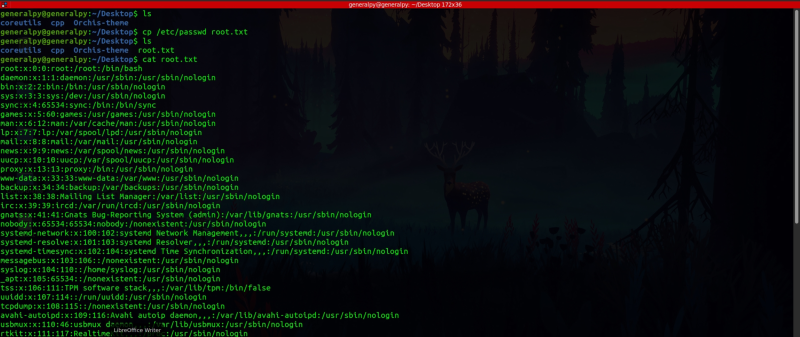
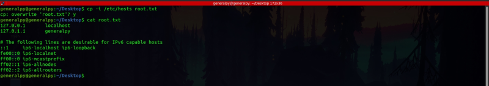
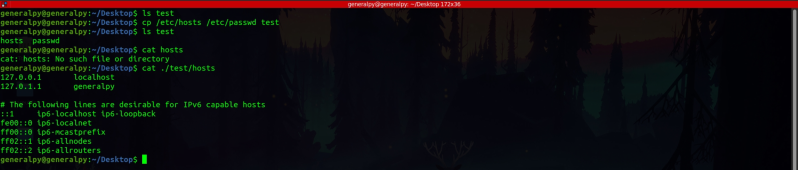
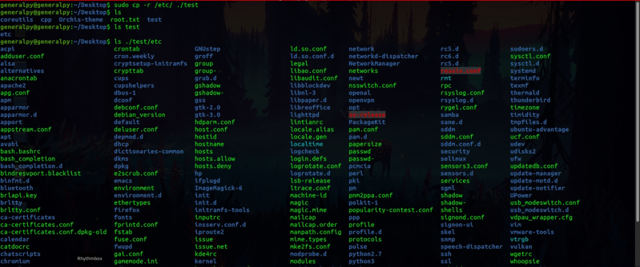
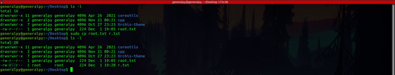
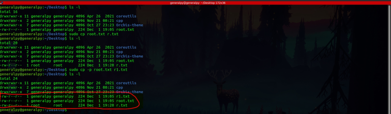

cp command is used to copy files in linux. cp command perform different functions according to number and type of arguments supplied to it.
All arguments are files : When we pass only files as arguments(generally 2 files), cp copies contents of file 1 to file 2, and if file 2 doesn't exists, create new file and then copy contents else overwrite it.
cp file1 file2;

We can use -v flag to see what cp command is doing. v stands for verbose here.
When we overwrite a file using cp by default there is no prompt to ask whether overwrite the file. We can use -i flag to start showing prompt when overwriting a file.

Multiple file arguments and one directory as arguments : In this case cp will create or overwrite all files specified inside the directory specified.
cp file1 file2 ... filen directory
-i flag also works for this case.
All arguments are directories : When we pass 2 directories as arguments to cp command we have to use -r flag which stands for recursive else it will not work. cp in this case will copy dir1 inside of dir2. sudo privileges might be required for files which are in admin area(like etc).
cp -r dir1 dir2
Change of file ownership using cp :

As we can see in image above, owner and timestamp in copied file are not preserved which cannot be good sometimes. There is a -p flag which stands for preserve which preserves file permissions, owner and timestamps for newly copied file.

As we can see in r1 owner and timestamps are preserved.